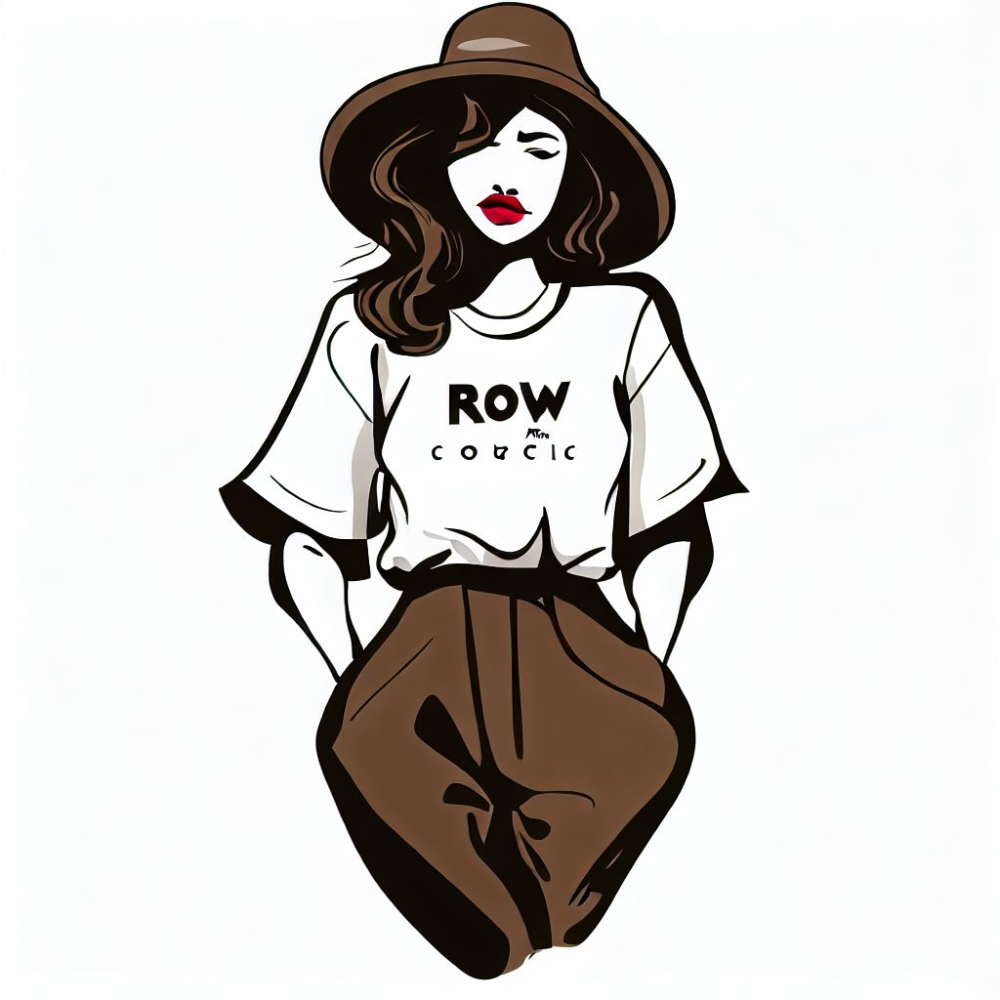

Overview
Purpose
The women's clothing resale business(ROWEC) aims to address the need for affordable yet stylish clothing options for women. Our website serves as a vital tool in achieving this goal by offering comprehensive information about our business and inspiring women to enhance their fashion while maintaining budget-conscious choices. Recognizing that many women may face limitations in visiting physical stores, our website becomes a convenient platform for them to explore our offerings and make informed purchasing decisions.
Our primary objective for this website is to serve as a promotional hub for our business. Through this digital presence, we aspire to expand our reach, ensuring that more women become aware of our store and the opportunities it offers for enhancing their self-image while saving money. This strategic move not only enhances our brand's visibility in the ever-growing online market, particularly in the post-pandemic era but also attracts a broader audience, ultimately increasing foot traffic to our physical store location.
Audience
The Women's Clothing Resale(ROWEC) caters specifically to women aged 15 to 59. Our focus is to provide a diverse selection of shirts ranging from sizes S to XL and pants available in sizes 0 to 13. We have chosen to concentrate on women as our primary audience due to their significant spending on clothing. This diversity enables us to accommodate a wide array of fashion preferences, from youthful to more sophisticated styles, giving our customers the freedom to express their unique tastes.
While women constitute the majority of our audience, our website is designed to be inclusive. Men can also explore our site to discover clothing options for family members, friends, or partners. However, it is clear that the predominant visitors to our site will be women. We have specifically targeted middle-class women because we recognize their dedication to finding high-quality clothing within their budget constraints. They desire garments that combine quality and affordability, and this is precisely what we offer.
Branding
Website Logo
Style Guide
Color Palette
Palette URL:
https://coolors.co/ccd5ae-fefae0-faedcd-d4a373| Primary | Secondary | Accent 1 | Accent 2 |
|---|---|---|---|
| [#d4a373] | [#ccd5ae] | [#fefae0] | [#faedcd] |
Typography
Heading Font: Montserrat
Paragraph Font: Lato
Normal paragraph example
As we all know fashion preferences change with the seasons prompting women to invest more in their wardrobes to stay on-trend unfortunately many struggle to find affordable clothing that suits their needs we aim to bridge this gap by providing a solution that offers both style and affordability
Colored paragraph example
Our website is accessible to women from various devices whether they choose to browse on a desktop laptop or mobile device the text and images on our pages are modified to ensure a seamless browsing experience adapting to the dimensions of each device
Navigation
Site Map
Wireframes
Home